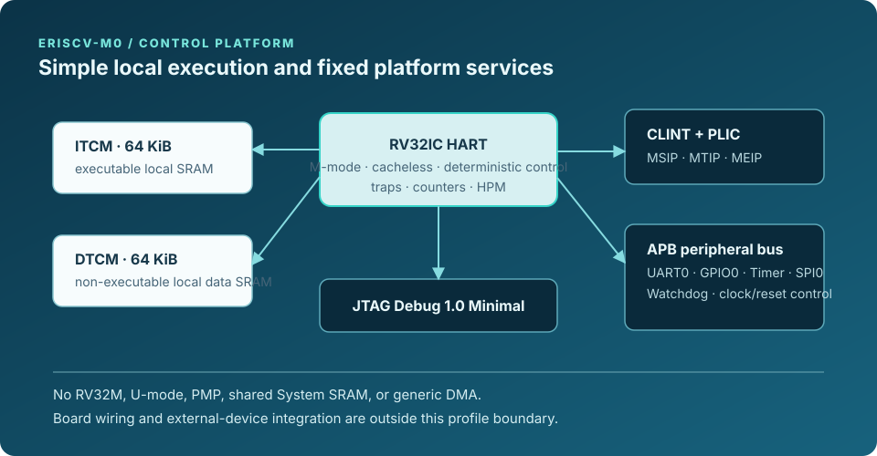
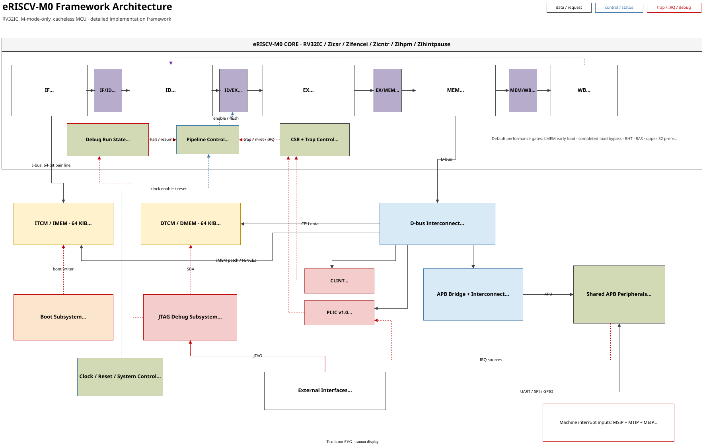

Control loop firmware
Use for finite-state control, sensor and actuator sequencing, timer-driven work, and interrupt-oriented peripheral service.
PRELIMINARY PRODUCT DATASHEET / M0
eRISCV-M0 is the smallest cacheless family configuration: deterministic M-mode firmware with the common interrupt, debug, counter, and peripheral platform.

SECTION 01
This preliminary datasheet defines the fixed local-memory M-mode configuration. Package, electrical, maximum-frequency, ordering, and availability data are not announced.
| CPU configuration | RV32IC with Zicsr, Zifencei, Zicntr, Zihpm, and Zihintpause; ilp32 ABI. |
|---|---|
| Privilege model | Machine mode only. |
| Local memory | 64 KiB executable ITCM and 64 KiB non-executable DTCM; directly addressed and cacheless. |
| Common services | CLINT, 32-source PLIC, Debug 1.0 Minimal JTAG DTM/DMI, and HPM3–HPM6. |
| Data movement | CPU-programmed local-memory and APB-peripheral accesses; no System SRAM or generic DMA. |

SECTION 02
Use M0 for compact, single-domain control firmware that needs predictable local-memory execution and standard machine-mode services, without a hardware M extension, user-mode boundary, PMP, or shared DMA buffer fabric.
Use for finite-state control, sensor and actuator sequencing, timer-driven work, and interrupt-oriented peripheral service.
Use the freestanding BSP for startup, trap handling, UART, GPIO, timer, SPI, CLINT, PLIC, watchdog, and counter access.
FreeRTOS and Zephyr collateral exercise development profiles; they are not a production board-support claim.
SECTION 03
All execution, storage, and observability resources are fixed in the M0 configuration; there are no optional cache, shared-RAM, protection, or arithmetic-extension blocks hidden behind the product name.
| Hart and execution | One in-order, little-endian RV32 hart. Compressed instructions are supported; IALIGN is 16 bits. |
|---|---|
| Integer arithmetic | RV32I and RV32C only. Multiply, divide, and remainder use compiler/runtime routines; no hardware RV32M unit is present. |
| Local storage | ITCM and DTCM each contain 16K × 32-bit words. The product contract accepts local-memory requests in one cycle; neither memory is cache-backed. |
| Counters | cycle, time, instret, and four programmable 64-bit HPM counters (mhpmcounter3–mhpmcounter6). |
| Not implemented | U-mode, PMP, RV32M, floating point, System SRAM, generic DMA, atomics, caches, and an MMU. |
SECTION 04
M0 combines a compact APB peripheral set with standard RISC-V control and debug services. Peripheral register behavior and pin-level integration remain owned by the shared architecture and board documentation.
| Block | M0 scope | Interrupt path |
|---|---|---|
| UART0 | 8N1 transmit/receive with parameterized FIFOs; polling and interrupt-driven BSP use. | PLIC source 1 for the aggregated UART condition. |
| GPIO0 | Output, input, and direction registers. Pin count, pads, and muxing are board-specific and not announced. | No dedicated PLIC source. |
| TIMER0 | APB counter/compare timer. | PLIC source 2 on enabled expiry. |
| SPI0 | Byte-oriented controller with four active-low slave-select outputs. | PLIC source 3 on enabled transfer completion. |
| WDT0 | Watchdog control and pre-timeout path. | PLIC source 4 on enabled pre-timeout. |
| Platform services | CLINT, PLIC, clock/reset control, and JTAG debug. | CLINT supplies local MSIP/MTIP; PLIC supplies MEIP. |
SECTION 05
Use the published windows; unmapped accesses return a bus error. This is a product-level quick reference; the complete sparse allocation and PLIC register contract remain in the shared Architecture chapter.
| Region | Address range | M0 use |
|---|---|---|
| ITCM | 0x1000_0000–0x1000_FFFF | 64 KiB executable local SRAM. |
| DTCM | 0x1100_0000–0x1100_FFFF | 64 KiB non-executable local SRAM for data and stack. |
| CLINT | 0x0200_0000–0x0200_BFFF | MSIP, mtime, and mtimecmp. |
| PLIC | 0x0C00_0000–0x0C20_0FFF | One M-mode context and 32 global sources. |
| APB peripheral space | 0x4000_0000–0x40FF_FFFF | UART0, GPIO0, TIMER0, SPI0, WDT0, and clock/reset control in fixed 64 KiB slots. |
| CPU interrupt | Cause | Source |
|---|---|---|
| MSIP | 3 | CLINT software interrupt. |
| MTIP | 7 | CLINT timer interrupt. |
| MEIP | 11 | PLIC output. Sources 1–4 are UART0, TIMER0, SPI0, and WDT0; source 5 is the reserved DMA slot, 6–16 are reserved device slots, and 17–32 are synchronized external-expansion inputs. |
SECTION 06
Reset chooses a local-image or loader-controlled start; JTAG provides the external debug boundary.
rst_n is the active-low SoC reset. On release, the core starts at boot_addr_i only when fetch is enabled. SRAM contents are not reset; reset clears control and response state.
Bypass starts the existing ITCM image. JTAG/DMI and UART boot loaders write ITCM then release fetch. The SPI-flash boot mode is reserved and has no implemented boot path.
One Debug 1.0 Minimal hart is accessed through JTAG DTM/DMI. The implemented smoke scope includes attach, halt/resume, abstract 32-bit GPR access, debug CSRs, and single step.
No package-level clock limit, reset timing, pad electrical behavior, pinout, or board boot qualification is published. A board integration requires separate definition and qualification of those conditions.
SECTION 07
The software contract fixes the ISA and ABI, then keeps RTOS support explicitly developmental.
| Area | M0 support boundary |
|---|---|
| Compiler contract | -march=rv32ic_zicsr_zifencei_zicntr_zihpm_zihintpause and -mabi=ilp32. |
| Freestanding BSP | Product-local shared startup and UART source, bare-metal trap handling, linker script, MMIO headers, GPIO, CLINT, PLIC, timer, SPI, and watchdog programming surfaces. |
| Image model | Bare-metal and FreeRTOS run text in ITCM and readonly/initialized data, BSS, and stack in DTCM; readonly and initialized bytes have an ITCM load image. The image tool emits separate ITCM and DTCM memory files. |
| RTOS collateral | FreeRTOS M-mode reuses the shared startup/data-init and UART implementation while its kernel port owns mtvec. Zephyr M-mode uses a distinct native-driver, ROM=ITCM, RAM=DTCM model. Both remain development/simulation collateral, not production board-support or certification claims. |
| Workloads | CoreMark, Embench-IoT selections, Dhrystone, and microbenchmarks are engineering collateral; they do not establish a guaranteed performance specification. |
SECTION 08
Keep the memory and privilege model simple.
Instruction fetch uses executable ITCM. DTCM is non-executable data memory. Both are directly addressed local SRAM; no cache or cache-maintenance operation is part of the model.
CLINT supplies MSIP and MTIP. The 32-source PLIC delivers MEIP. One Debug 1.0 Minimal JTAG DTM/DMI target provides the common external debug interface.
M0 intentionally omits RV32M. Code that requires multiply or divide uses compiler/library routines; select M1 when hardware RV32M is a requirement.
Zicntr and Zihpm expose cycle, time, instret, and programmable HPM3–HPM6 under the family event contract.
SECTION 09
M0 does not provide RV32M, U-mode, PMP, floating point, System SRAM, generic DMA, atomics, S-mode, an MMU, caches, flash/XIP, or production boot/image format definition.
Package, electrical, board-boot, performance, and availability data are not published by this preliminary datasheet.
SECTION 10
The Architecture chapter owns the ISA/ABI declaration, address map, and PLIC allocation. See Software for toolchain and BSP use, Verification for evidence boundaries, and FPGA evaluation for implementation context. The completed M0 UART boot to Hello World record contains the first retained physical-board smoke evidence.